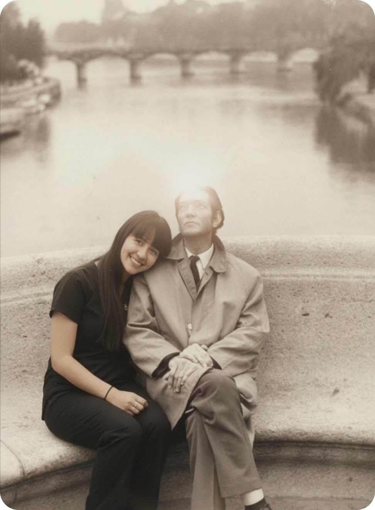

¿Por qué
Cronopio?
Nuestro nombre rinde homenaje a los personajes de los cuentos de Julio Cortázar —el escritor favorito de Tania—. Los cronopios son seres que buscan la sorpresa y la invención fuera de la norma. Nosotros también buscamos una manera inventiva, más humana y más honesta de cuidar el cerebro y la mente.
Nuestro nombre rinde homenaje a los personajes de los cuentos de Julio Cortázar
—el escritor favorito de Tania—. Los cronopios son seres que buscan la sorpresa
y la invención fuera de la norma. Nosotros también buscamos una manera
inventiva, más humana y más honesta
de cuidar el cerebro y la mente.

"Buscamos la sorpresa, la invención y lo humano—fuera de la norma—."
"Buscamos la sorpresa, la invención y lo humano
—fuera de la norma—."
